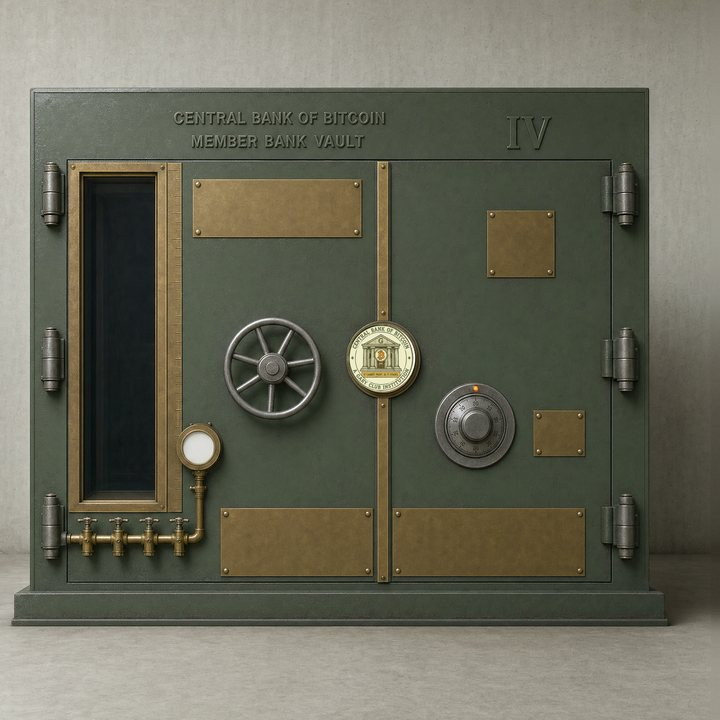

of Bitcoin
02 / Primary issuance
A new vault.
Entered in the register.
Buy a newly issued vault in a holder-approved sale round. Payment is in cbBTC, at the price set by the vault holders.
Your vaults
Charter window status
Read the charter record.
The current dates and claim count appear here when the public record loads.
Read the charter terms ↗Your next step